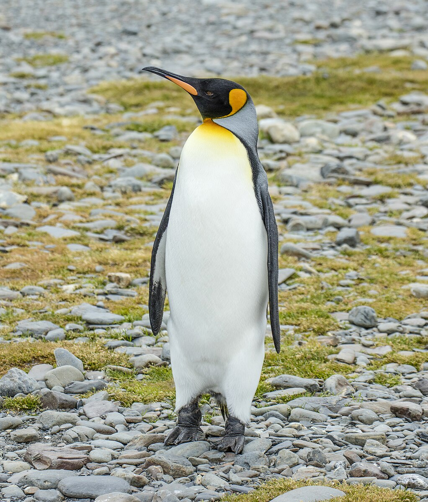

<br>
<a href="https://commons.wikimedia.org/wiki/File:SGI-2016-South_Georgia_%28Fortuna_Bay%29%E2%80%93King_penguin_%28Aptenodytes_patagonicus%29_04.jpg">King penguin</a> © 2016 by <a href="https://commons.wikimedia.org/wiki/User:Godot13">Godot13</a> is licensed under <a href="https://creativecommons.org/licenses/by/4.0/">CC BY 4.0</a>